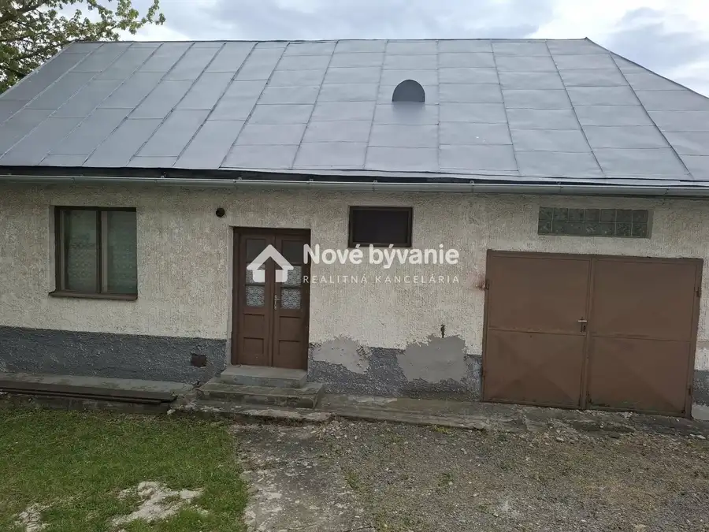
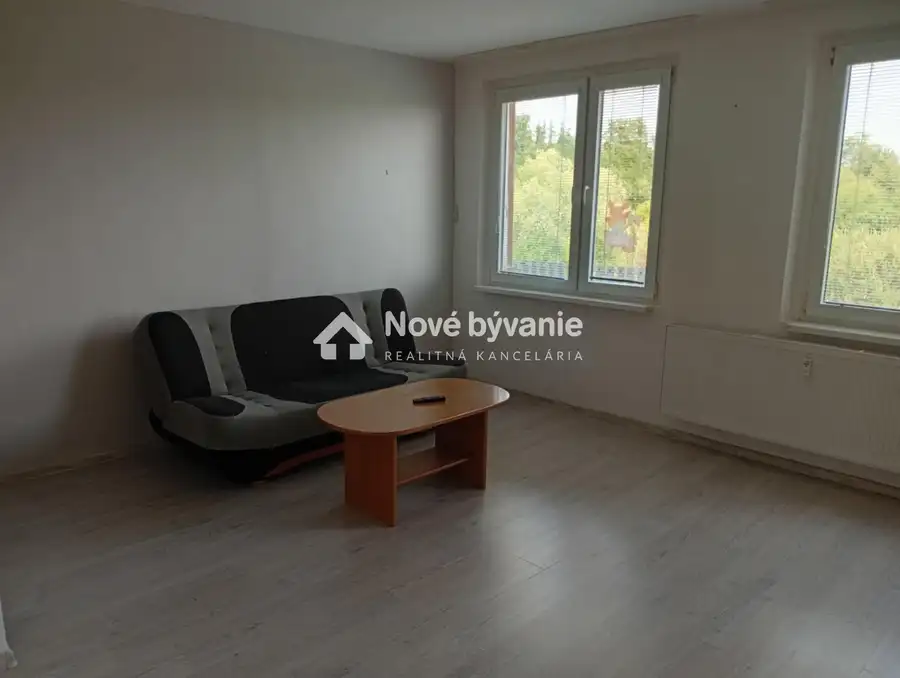
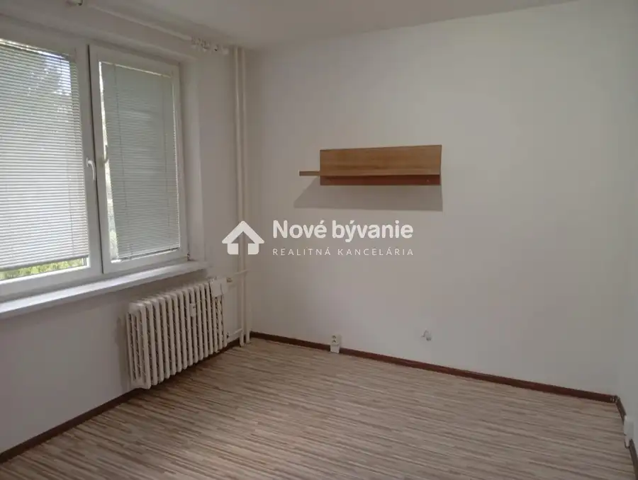
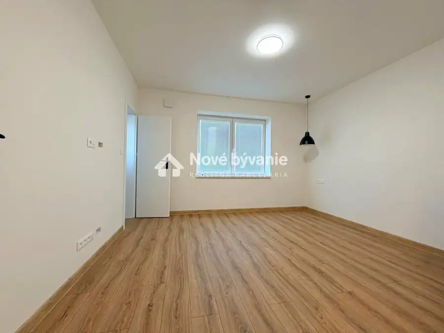
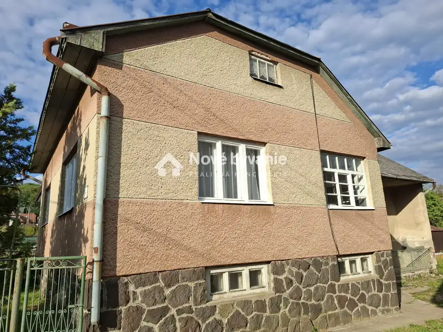

Prenájom · Dom
Hľadáme dom na prenájom v okrese Vranov nad Topľou
Vranov nad Topľou
Cena na vyžádání


- Plocha100 m²
- StavPôvodný stav
- VlastníctvoOsobné
O nehnuteľnosti
Realitná kancelária Nové bývanie hľadá rodinný dom na prenájom pre konkrétneho klienta v okrese Okres: Vranov nad Topľou. Dom môže byť aj v pôvodnom stave.V prípade záujmu ma kontaktujete na čísle 0951 381 363 alebo mailujte na : rusnak@novebyvaniereality.sk
Parametre
- Druh
- Rodinný dom
- Dátum zverejnenia
- 14. 07. 2026
- Plocha pozemku
- 600 m²
- Stav nehnuteľnosti
- Pôvodný stav
- Typ
- Prenájom
- Typ konštrukcie
- Zmiešaná
- Vlastníctvo
- Osobné
- Vybavenie
- Terasa
- Úžitková plocha
- 100 m²
Kde to je


Ďalšie ponuky
Celá ponukaMohlo by Vás zaujímať

BytNové Cena na vyžádáníHľadáme byt na prenájom vo Vranove nad Topľou Vranov nad Topľou 4-izbový44 m²
BytNové Cena na vyžádáníHľadáme byt na prenájom vo Vranove nad Topľou Vranov nad Topľou 3-izbový65 m²
DomNové Cena na vyžádáníHľadáme dom na prenájom v okrese Vranov nad Topľou Vranov nad Topľou 120 m²